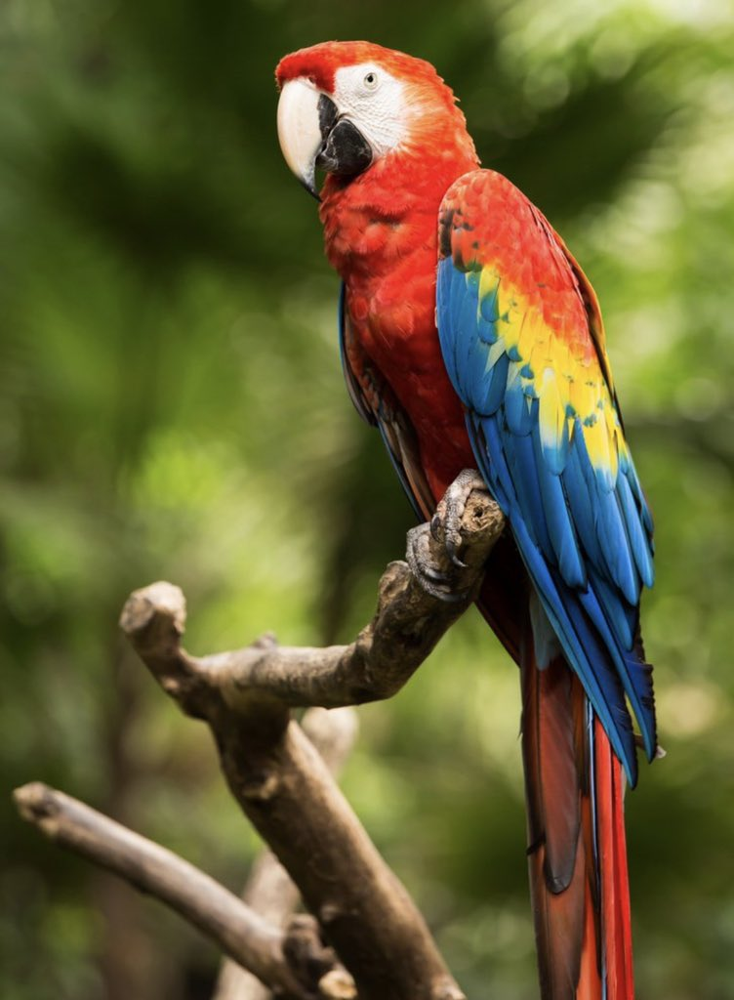

Simbolos Patrios
Escudo Nacional de Honduras
República de Honduras Símbolos Patrios Bandera La Bandera Nacional de Honduras es un rectángulo cuya longitud mide el doble de su anchura. Está dividida en tres fajas horizontales, de las mismas dimensiones. La del centro es color blanco, y las de los extremos de color azul turquesa. Sobre la faja blanca y en un rectángulo central, se encuentran cinco estrellas de cinco picos cada una. Cuatro de ellas ocupan las esquinas de rectángulo y la quinta, el centro. Es condición que uno de los picos de las cinco estrellas mire hacia arriba. Honduras Escudo Un triángulo equilátero colocado en un terreno que bañan dos mares. En la base del triángulo, un volcán entre dos castillos, sobre los cuales se levanta el arco iris. Bajo del arco iris, tras el volcán, un sol que esparce abundantes luces, y alrededor del triángulo, un óvalo donde se lee, en letras de oro mayúsculas: REPÚBLICA de HONDURAS, LIBRE SOBERANA E INDEPENDIENTE. En su parte baja, en letras del mismo color pero de menor tamaño: 15 de SEPTIEMBRE 1821. En el área superior del óvalo, una aljaba llena de flechas, en la que penden dos cuernos de la abundancia, unidos con un lazo y vueltos hacia abajo. Una cordillera de montañas en donde descuellan tres árboles de roble a la derecha y tres pinos a la izquierda, abajo las minas, una barra, un barreno, una cuña una almádana y un martillo. Cada uno de estos elementos tiene un especial significado, el triángulo equilátero indica que todos los hondureños son iguales ante la ley, en derechos y deberes, el volcán es uno de los que figuran en el Escudo de la Federación de Centro América.
Bandera Nacional de Honduras

La Bandera Nacional fue creada durante la Administración del presidente de la República don José María Medina el 16 de febrero de 1866, [1] fecha en la que el Congreso Nacional emitió el Decreto Legislativo No. 7, que establece: "El pabellón de la República de Honduras llevará, como el de la antigua Federación Centroamericana, dos fajas azules y una blanca en medio, colocadas horizontalmente; y, además, un grupo de cinco estrellas azules de cinco ángulos salientes, en el centro del campo blanco. Esas fajas del pabellón serán de tres a cuatro varas de longitud y de nueve pulgadas de latitud. La bandera antes dicha será la mercante. La de guerra llevará las mismas dimensiones y colores; y, además, el Escudo de Armas en el centro de la franja blanca, con las cinco estrellas bajo el mismo escudo, colocadas en forma circular".
El Mamifero y Mapa Nacional
Como medida para conservar la fauna nacional y sobre todo el medio ambiente, de la depredación desmedida, el congreso Nacional emitió el decreto ejecutivo n° 36-93 de junio de 1933, en virtud del cual se instituía como símbolo de la fauna nacional al Venado Cola Blanca, se trata de una de las dos especies de venado que habitan en Honduras, es un animal muy activo en los bosques hondureños. El Mapa Nacional de Honduras es la representación geográfica del país y en el figuran los 18 departamentos que componen la división administrativa, los mares que bañan sus costas las zonas fronterizas y los elementos físicos que integran el relieve hondureño: sierras montañas, valles, ríos, mesetas, colinas etc. De igual manera los nombres de las ciudades municipios aldeas y caseríos repartidos a largo y ancho del territorio; así mismo están incluido las zonas insulares.
Historia del Himno Nacional
Durante 94 años Honduras no tuvo Himno Nacional. Desde la Independencia, en 1821, hasta 1915 los himnos que se utilizaron fueron: La Granadera, El Himno Marcial, Un Salva Hondureño (de autor desconocido), Himno Nacional (Valentín Durón); en tiempos de Medina "Marcha a Gerardo Barrios" del autor belga Coussin y el Himno Hondureño. En 1904, cuando llegó al poder el general Manuel Bonilla a finales de septiembre, no existía aún un Himno Nacional reconocido y fue en ese preciso momento en que un grupo de distinguidos intelectuales presentó al presidente la propuesta para la creación de la letra de nuestro Himno Nacional. En la Revista del Archivo y Biblioteca Nacional se publicaron los trabajos presentados por diversos poetas, que parecen estar sujetos, de manera flexible, a ciertas estipulaciones para llenar los requisitos especiales que se les pedía: un poema que pudiera representar y ser símbolo nacional del pueblo de Honduras. Entre esos intelectuales que participaron estuvieron Valentín Durón, Santos B. Tercero, Jerónimo Reyna, Juan Ramón Molina, Alfonso Guillén Zelaya y Augusto C. Coello, quien fue el ganador.
Flor Nacional: La Orquidea
CPrimero fue la rosa la flor nacional de honduras, entre los años 1946 y 1969, pero en noviembre de ese último año el gobierno militar precedido por el General Oswaldo López Arellano decreto una nueva flor nacional la orquídea Brasasavola Dgbyana, esta orquídea abunda en los bosques hondureños, principalmente en las zonas húmedas que se encuentra a temperaturas muy frías.
Ave Nacional: Guara Roja
La guara roja o guacamaya perteneciente a la gran familia de los loros, se le reconoce como el ave nacional de la república de honduras, es un ave muy apreciada por las antiguas civilizaciones, podemos encontrar esculturas talladas en los monumentos mayas, llega a medias hasta los 90 centímetros de largo.
Árbol Nacional: El Pino
Por acuerdo n° 429, de 14 de mayo de 1928, el gobierno de Miguel Paz Barahona resolvió declarar el pino hondurense como árbol nacional, este acuerdo expresaba: implantar, por medio de las autoridades de toda índole y de los centros de enseñanza, el hábito de poblar los bosques, es el árbol con mayor influencia en el país, su tala es controlada por el estado y en la mayoría de casas es ilegal hacerlo.